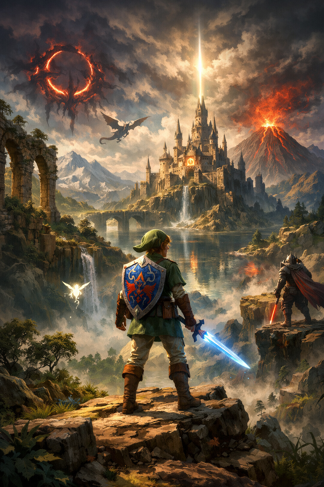

But du mini‑jeu
Avance scène par scène : fais des choix, gagne des rubis, débloque des badges… et atteins une fin.
Comment ça marche
8 étapes • 3 choix par étape • mini‑défis ponctuels.
- Choisis : chaque décision modifie les ressources et les événements.
- Réussis des mini‑jeux (runes, mémoire, timing…) pour gagner des avantages.
- Sauvegarde auto : “Reprendre” se débloque dès qu’une sauvegarde existe.
Mini‑jeu : aventure en 8 étapes
Choisis un nom + une difficulté, puis avance scène par scène (3 choix à chaque étape).
Le bouton “Reprendre” s’active quand une sauvegarde existe.
Timeline liée au jeu
Clique une entrée pour ouvrir le détail.
Fin
—
Journal

Astuce : remplace l’image dans assets/img/ui/game_art.jpg.